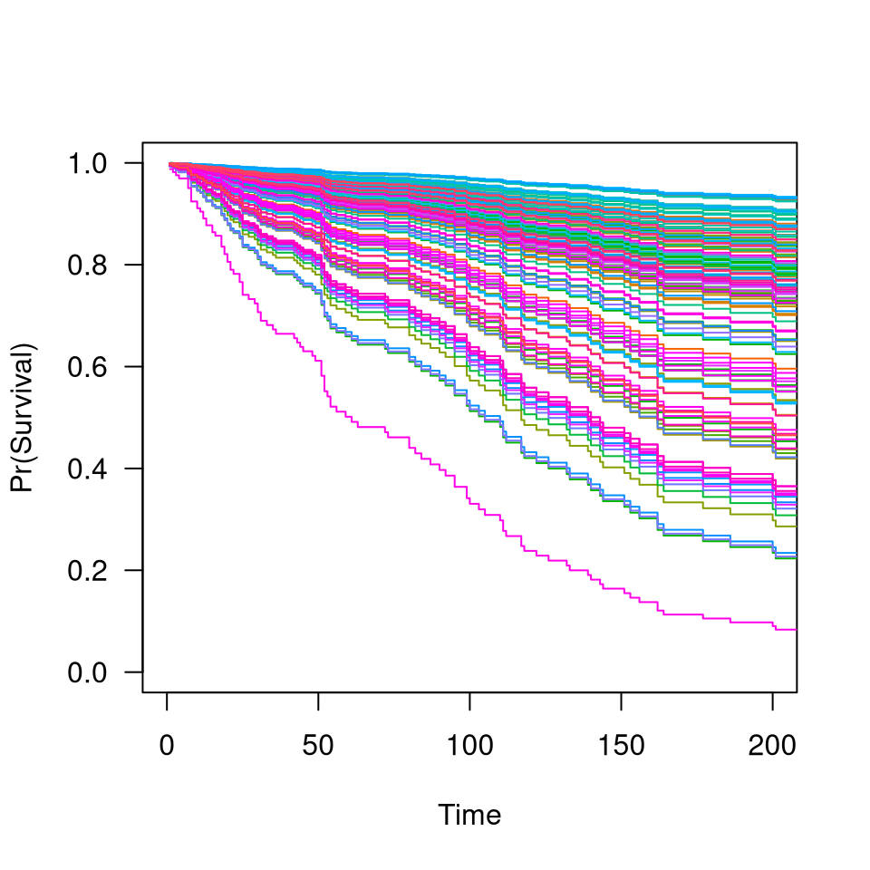

Similar to other predict methods, this function returns predictions from a
fitted ncvsurv object.
Arguments
- object
Fitted
"ncvsurv"model object.- X
Matrix of values at which predictions are to be made. Not used for
type="coefficients"or for some of thetypesettings inpredict.- type
Type of prediction:
linkreturns the linear predictorsresponsegives the risk (i.e., exp(link))survivalreturns the estimated survival functionmedianestimates median survival times The other options are all identical to theirncvreg()counterparts:coefficientsreturns the coefficientsvarsreturns a list containing the indices and names of the nonzero variables at each value oflambdanvarsreturns the number of nonzero coefficients at each value oflambda.
- lambda
Values of the regularization parameter
lambdaat which predictions are requested. For values oflambdanot in the sequence of fitted models, linear interpolation is used.- which
Indices of the penalty parameter
lambdaat which predictions are required. By default, all indices are returned. Iflambdais specified, this will overridewhich.- ...
Not used.
Details
Estimation of baseline survival function conditional on the estimated values
of beta is carried out according to the method described in Chapter
4.3 of Kalbfleish and Prentice. In particular, it agrees exactly the
results returned by survfit.coxph(..., type='kalbfleisch-prentice')
in the survival package.
References
Breheny P and Huang J. (2011) Coordinate descent algorithms for nonconvex penalized regression, with applications to biological feature selection. Annals of Applied Statistics, 5: 232-253. doi:10.1214/10-AOAS388
Kalbfleish JD and Prentice RL (2002). The Statistical Analysis of Failure Time Data, 2nd edition. Wiley.
Author
Patrick Breheny patrick-breheny@uiowa.edu
Examples
data(Lung)
X <- Lung$X
y <- Lung$y
fit <- ncvsurv(X,y)
coef(fit, lambda=0.05)
#> trt karno diagtime age prior squamous
#> 0.271657331 -0.031750420 0.000000000 -0.004227748 0.000000000 -0.852920353
#> small adeno large
#> 0.000000000 0.261188132 -0.466335148
head(predict(fit, X, type="link", lambda=0.05))
#> 1 2 3 4 5 6
#> -2.778003 -3.074368 -2.646943 -2.752636 -3.078596 -1.423431
head(predict(fit, X, type="response", lambda=0.05))
#> 1 2 3 4 5 6
#> 0.06216253 0.04621881 0.07086755 0.06375954 0.04602382 0.24088609
# Survival function
S <- predict(fit, X[1,], type="survival", lambda=0.05)
S(100)
#> [1] 0.9421869
S <- predict(fit, X, type="survival", lambda=0.05)
plot(S, xlim=c(0,200))

# Medians
predict(fit, X[1,], type="median", lambda=0.05)
#> [1] 999
M <- predict(fit, X, type="median")
M[1:10, 1:10]
#> [,1] [,2] [,3] [,4] [,5] [,6] [,7] [,8] [,9] [,10]
#> [1,] 80 103 122 151 177 231 278 340 384 411
#> [2,] 80 110 133 162 231 283 357 392 467 587
#> [3,] 80 103 122 151 177 231 278 340 384 411
#> [4,] 80 103 122 151 177 231 278 340 384 411
#> [5,] 80 110 133 162 231 283 357 392 467 587
#> [6,] 80 87 92 95 100 105 111 111 117 126
#> [7,] 80 95 105 117 132 144 156 177 201 242
#> [8,] 80 111 144 201 278 378 392 553 587 991
#> [9,] 80 99 112 133 153 177 216 250 283 357
#> [10,] 80 110 133 162 231 283 357 392 467 587
# Nonzero coefficients
predict(fit, type="vars", lambda=c(0.1, 0.01))
#> $`0.1000`
#> trt karno squamous adeno large
#> 1 2 6 8 9
#>
#> $`0.0100`
#> trt karno age prior squamous adeno large
#> 1 2 4 5 6 8 9
#>
predict(fit, type="nvars", lambda=c(0.1, 0.01))
#> 0.1000 0.0100
#> 5 7